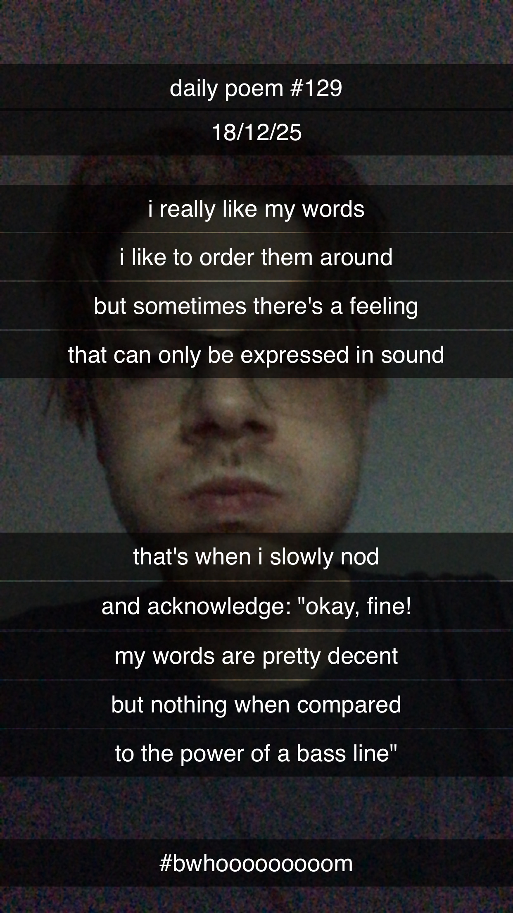

The Power of a Bassline
[129]I really like my words,
I like to order them around,
But sometimes there's a feeling
That can only be expressed in sound.
That's when I slowly nod
And acknowledge, "Okay, fine –
My words are pretty decent,
But nothing when compared
To the power of a bassline."
